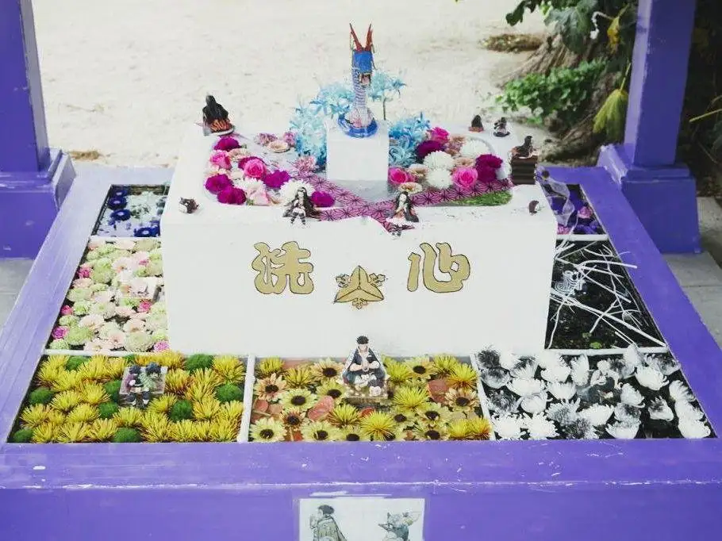
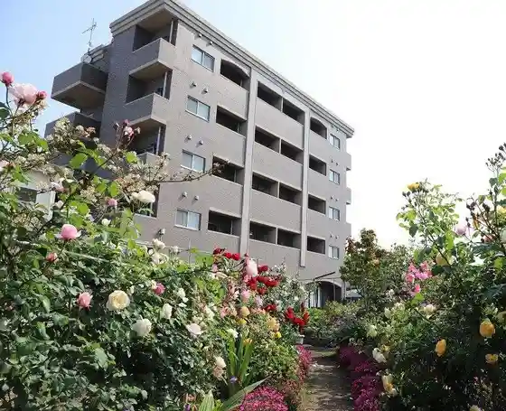

Nagasu
Nagasu · Kumamoto
Nagasu
Highlighted on the Kumamoto map.

Sights
Kingyo to Koi no Sato Plaza
Shodai Yaki Ichi Saki Kama
Bijinesuin

Tsuda Maru Suisan Umi Mono Village
Kohii Jika Baisen Mame Uri Mise Tsukumo
Kingyo no Kan
Shio Ko Shrine (Shiojijinja)
Nagasu Minato Minato Ikoi Plaza